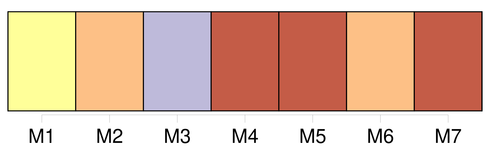

Longueur nb maillons : 20 mentions |
  |
[ article ] La société Evobus a fêté le départ en retraite d' [un de ses plus fidèles employés] , [Michel Zajac] Entouré de [ses] collègues et amis, accompagné de [sa] femme, [il] a reçu les honorables remerciements de la société par l'entremise de son directeur, M. Muller.
« J'ai souvent pu apprécier [votre] travail, [vous] serez toujours le bienvenu chez nous », expliquait -il, avant la remise des cadeaux. [Michel Zajac] quitte donc une entreprise qu' [il] a connu sous différents noms, d'abord Rouméas, à [son] entrée, puis Kassbohrer jusqu'en 1995, et enfin Evobus France. Une société qui a évolué et qui a aussi fait évoluer ses employés, notamment [Michel] , passé par différents types de poste, pour terminer préparateur de profilé de sol.
« [Vous] avez contribué à la qualité de fabrication de notre entreprise par [votre] passion du travail et [votre] rigueur », concluait [le directeur] devant l'équipe où a travaillé [Michel Zajac] Désormais, [le jeune retraité] pourra profiter d'une occupation des plus paisibles, la pêche, et ne plus penser qu'à [son] bien-être et à celui [des siens] |
La ressource peut être téléchargée sur la page Ortolang
Si vous avez des questions ou vous voyez des erreurs, merci d'envoyer un mail à silvia.federzoni89@gmail.com
Site développé par S. Federzoni (contact)